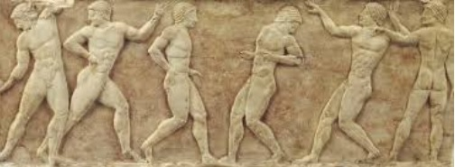
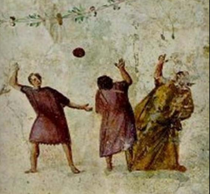
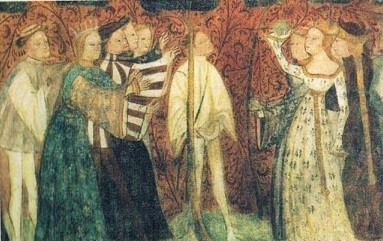
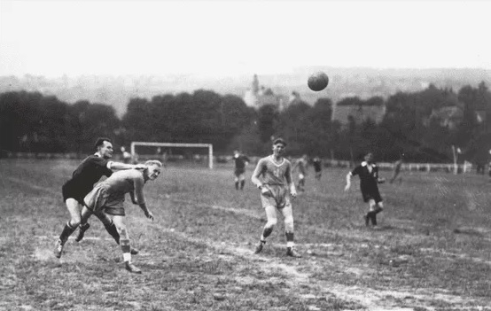
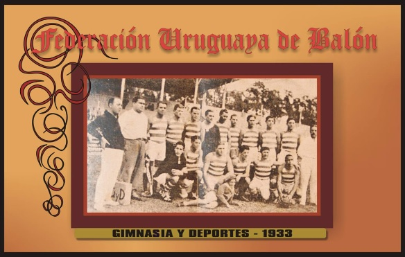
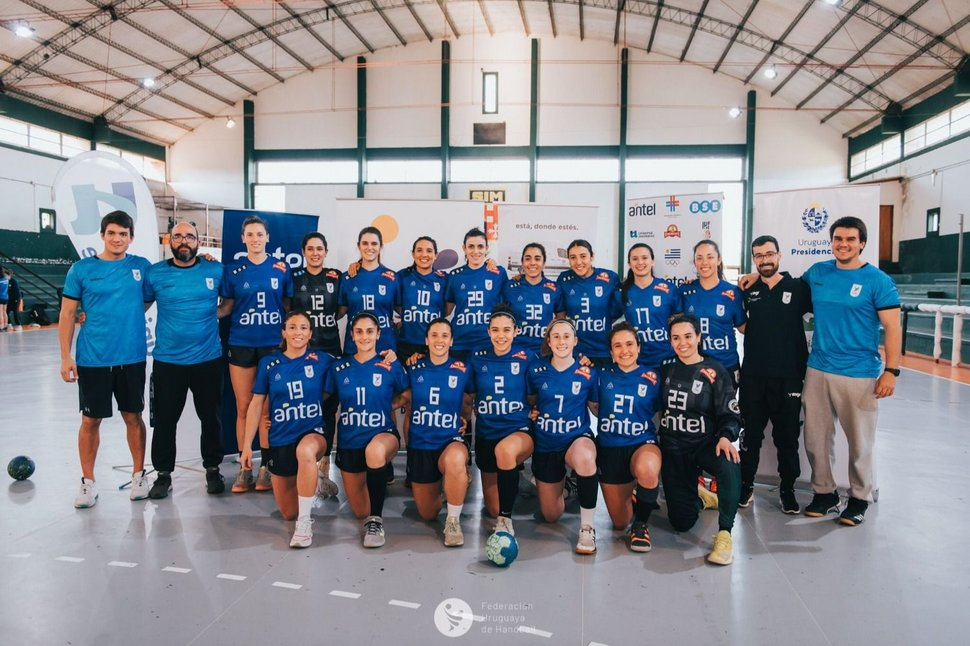
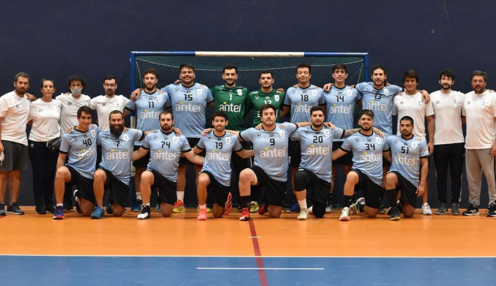

El handball o balonmano es un deporte reciente, aunque como en otros casos hay prácticas deportivas similares que se remontan a muchos siglos atrás. En la antigua Grecia ya se practicaba un juego de pelota con la mano, conocido como el “juego de urania”, este se jugaba con una pelota del tamaño de una manzana y los participantes debían procurar que no tocara el suelo. Este juego lo llegó a describir Homero en la "Odisea".

Imagen tomada del archivo digital de la Universidad Politécnica de Madrid
En la época romana, un médico llamado Claudio Galeno recomendaba a sus enfermos que jugaran al “Hapaston” que se practicaba con un balón.

Se jugaba con una pelota pequeña
Imagen tomada del archivo digital de la Universidad Politécnica de Madrid
En la Edad Media también se practicaban juegos de pelota con la mano principalmente en la corte. Los trovadores los bautizaron como “primeros juegos de verano”. En todos los casos eran juegos y prácticas deportivas no estructuradas, no tenían reglamento.

Imagen tomada del archivo digital de la Universidad Politécnica de Madrid
Los orígenes modernos del balonmano datan del siglo XIX, cuando se utilizaba como complemento para entrenar a los gimnastas. En 1892 un profesor de gimnástica, Konrad Koch creó el "Raffballspied" con características muy parecidas al actual handball. En ese tiempo, en Checoslovaquia se practicaba en las escuelas un juego en el que cada equipo estaba formado por siete jugadores,que se denominaba "Hazena" y su primer reglamento apareció en 1905. En Dinamarca, el profesor de educación física, Holger Nielsen, en 1898 introducía un juego nuevo con un balón pequeño al que se llamó "Haandbol". Se trataba de meter goles en una portería de una manera semejante al fútbol, pero manejando el balón con las manos. El profesor de educación física Max Heiser es considerado como el verdadero y legítimo "padre" de esta modalidad deportiva. Jugaba con sus alumnas en una de las principales avenidas de Berlín en 1907. El juego que creó se denominó "Torball".
Dos años más tarde un compatriota de Heiser Karl Schelenz "inventa" un nuevo juego al que denominó "Hanball", inspirado principalmente en el fútbol. Las reglas eran idénticas, con la diferencia de que se jugaba con la mano. Cada equipo estaba compuesto por 11 jugadores y se practicaba sobre un terreno de fútbol, después de la primera guerra mundial se asienta definitivamente este juego. Prácticamente se convierte en el deporte oficial de Alemania.
Por otra parte Uruguay reivindica la paternidad de este deporte, donde comenzó a ser muy conocido en 1916 un juego muy parecido al actual. Dos años más tarde se disputaba un encuentro oficial en el estadio de Montevideo. Algunos datos señalan que es en setiembre de 1925, cuando se jugó el primer partido internacional en Europa ya se habían jugado partidos internacionales en el Río de la Plata por esto es que algunos autores sostienen que es en Uruguay donde se inventó el handball.

Imagen tomada de Dicas Educação Física.Handball History in the World
En 1926 se estableció el reglamento internacional de handball. En 1928 se fundó la Federación Internacional Amateur de Handball por 11 países durante los juegos olímpicos de verano. Este organismo más tarde se convirtió en la actual Federación Internacional de Handball (IHF).
El handball en Uruguay
La historia del handball uruguayo tiene sus raíces a comienzos del siglo XX. En 1918 el profesor naturista Antonio Valeta, como forma de contrarrestar la violencia que había en los partidos de fútbol todos los fines de semana, crea un deporte llamado Balón que tenía varías similitudes con el fútbol, pero se jugaba con la mano.
A partir de 1921 con la creación de la Federación Uruguaya de Balón comienza la actividad local y se realizan partidos internacionales con Argentina (que en el mismo año también fundó su Federación), tanto a nivel de clubes como de selecciones.
Instituciones actuales como Peñarol, Nacional, Sud América, Sporting (previo a la fusión con Defensor), Atenas, Aguada, Macabi,
Goes, Stockolmo y Olimpia participaron en diferentes períodos. Más allá de toda la difusión que se le dio al balón en nuestro país desapareció alrededor de 1945.

En Europa se desarrollaba otra historia. Se venían practicando varios deportes con la mano desde fines del siglo XIX y comienzos del siglo XX. Uruguay desconocía esta realidad europea y se vió sorprendido cuando a fines de 1926 llega a nuestro país el reglamento de felhandball (handball de campo) de Karl Schelenz. Ante la similitud de algunas reglas (cancha de fútbol, juego con la mano, área restrictiva) surge el convencimiento que ese deporte había sido plagiado de nuestro balón. A partir de ahí comienza “la versión uruguaya” de cómo podía haber llegado el balón hasta Alemania.
Luego de este hecho, Uruguay formaliza sus reclamos ante la recién creada International Amateur Handball Federation (IAHF) en 1928. Esta organización internacional se ve sorprendida al saber que desde 1918, en un pequeño país de Sudamérica existiera un “fútbol con las manos”, con área restrictiva, y varias reglamentaciones similares al tan difundido handball de campo alemán. Si bien la actual Federación Internacional (IHF) desconocía la existencia del juego uruguayo de Valeta y sus reclamos. Hoy, la Federación Uruguaya de Handball y la Confederación Argentina de Handball plantean ante el máximo organismo internacional, rector del balonmano, la necesidad de reconocer al Balón Uruguayo como antecedente histórico del handball.
 
Selección uruguaya masculina de handball (año 2022). Foto: Diario El Pais
Sitio web de la Federación Uruguaya de Handball
http://www.handball.com.uy/
Los trovadores fueron músicos y poetas medievales que componían sus obras y las interpretaban, o las hacían interpretar por juglares o ministriles. Surgieron en las cortes señoriales de ciertos lugares de Europa, especialmente del sur de Francia, entre los siglos XII y XIV. La poesía trovadoresca se compuso principalmente en idioma occitano.